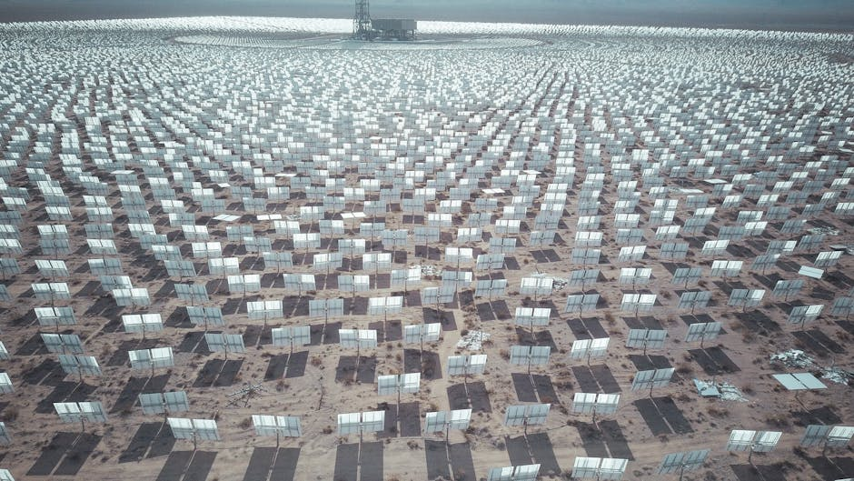

Estimating Solar Irradiance for Improved Solar Energy Planning in Sub-Saharan Africa through AI

The project successfully developed a machine learning model to predict daily Global Horizontal Irradiance (GHI) in Sub-Saharan Africa, with a specific focus on Uganda. The core objective was to correct the systematic bias found in readily available satellite-derived solar irradiation data (like NASA CERES and CAMS). Key activities included identifying five installation sites in Uganda for ground-truth data collection (Gulu, Mbale, Jinja, Kasese, Hoima), procuring pyranometers (though installation was hindered by lack of Ministry of Energy approval), and extensively collecting data from four satellite sources and partner ground stations (Cross Boundary Energy, Makerere University, Ministry of Energy) combined with local topological information (ie. altitude). A Random Forest model was trained on this integrated dataset, proving superior to other models (LSTMs, SVMs) by effectively adjusting the satellite predictions to align with the ground truth across all climatic regions, thus providing a significantly more reliable and bankable estimate of solar resources essential for rural electrification planning.
Data characteristics
[Auto-enriched from linked project resources]
Bias-corrected daily Global Horizontal Irradiance (GHI) data for Uganda, derived by correcting CAMS and NASA POWER satellite datasets against ground-truth measurements from 56 validation sites across Uganda. Training data includes measurements from 7 African countries. The correction addresses a 20% satellite overestimation of solar potential. Data is accessible via the Solar Irradiance Portal web interface and a RESTful API for application integration.
Source: https://github.com/Marconi-Lab/Solar_irradiation, https://irradiation-portal-55883164704.europe-west1.run.app/
Model characteristics
[Auto-enriched from linked project resources]
Random Forest model (SuSSE -- Sub-Saharan Solar Estimation) that corrects satellite-derived solar irradiance estimates for Uganda. Input: CAMS and NASA POWER satellite GHI data. Output: bias-corrected daily GHI values. Validated against 56 ground-truth sites across Uganda, achieving R-squared of 0.86 and correcting a 20% overestimation in standard satellite products. Application: deployed as an interactive web portal with maps, charts, and a RESTful API for integration. Code: Python package at github.com/Marconi-Lab/Solar_irradiation (87.9% Jupyter Notebook, 12.1% Python).
Source: https://github.com/Marconi-Lab/Solar_irradiation, https://irradiation-portal-55883164704.europe-west1.run.app/
How to use
[Auto-enriched from linked project resources]
## How to Use This Resource
This resource addresses a critical problem for solar energy planning in Uganda: standard satellite data sources such as CAMS and NASA POWER systematically overestimate solar irradiance by roughly 20%, which reduces lifetime energy savings for consumers by 5-20% and creates financial risk through incorrect system sizing. The Irradiation Portal provides corrected Global Horizontal Irradiance (GHI) data by applying a machine learning model trained on ground-truth measurements from 56 validation sites across Uganda and 7 African countries, achieving an R-squared accuracy of 0.86.
Anyone involved in solar project development, rural electrification planning, or energy policy in Uganda can access the corrected data through the [Irradiation Portal web application](https://irradiation-portal-55883164704.europe-west1.run.app/). The portal offers interactive data exploration with dynamic charts and maps, monthly irradiance measurements in kWh/m2/day, and historical data access -- all through a standard web browser. Technical documentation and user support are built into the portal.
For organisations that want to integrate the corrected solar data into their own planning tools or applications, a RESTful API is available through the portal. This enables automated data retrieval for feasibility studies, system design calculations, or monitoring dashboards.
Researchers and developers looking to extend the underlying methodology can access the SuSSE (Sub-Saharan Solar Estimation) model code, which is openly available on [GitHub](https://github.com/Marconi-Lab/Solar_irradiation). The repository includes the full codebase with Jupyter Notebooks and Python scripts, along with testing and development tools. This opens possibilities for adapting the correction model to other Sub-Saharan African countries where similar satellite overestimation issues exist.
Sources:
- https://github.com/Marconi-Lab/Solar_irradiation
- https://irradiation-portal-55883164704.europe-west1.run.app/
Datasets
Use cases
About
Powered by / Provided by: Makerere University (Marconi Lab)
Catalyzed by: FAIR Forward - AI for All, GIZ
Financed by: BMZ
Contact: Jan Mikelson <jan.mikelson@gmail.com> Andrew Katumba katraxuk@gmail.com